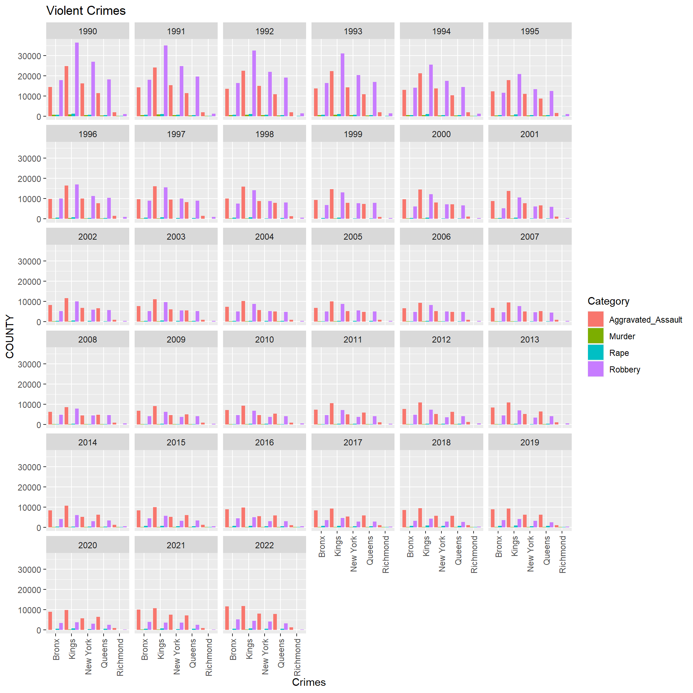
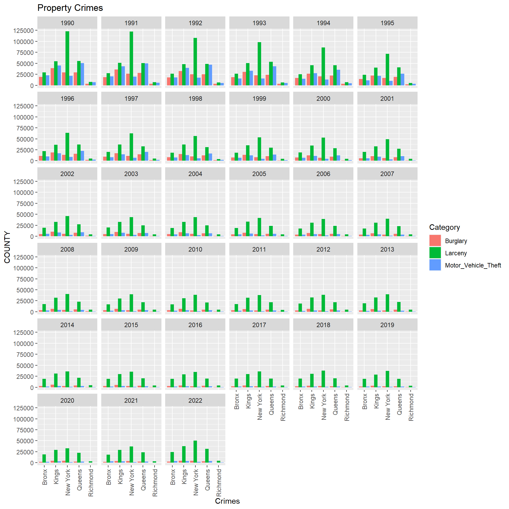
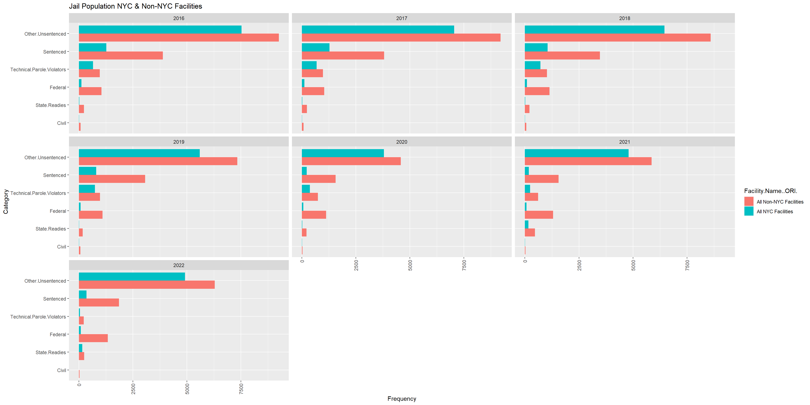
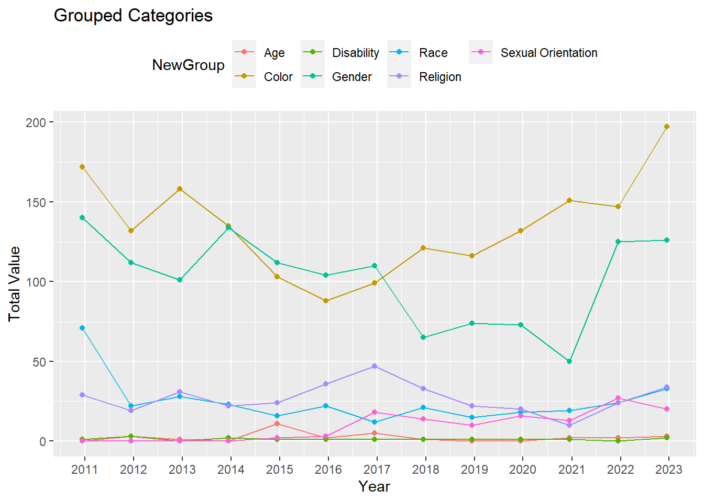
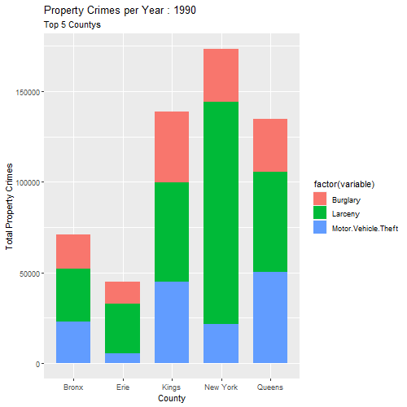
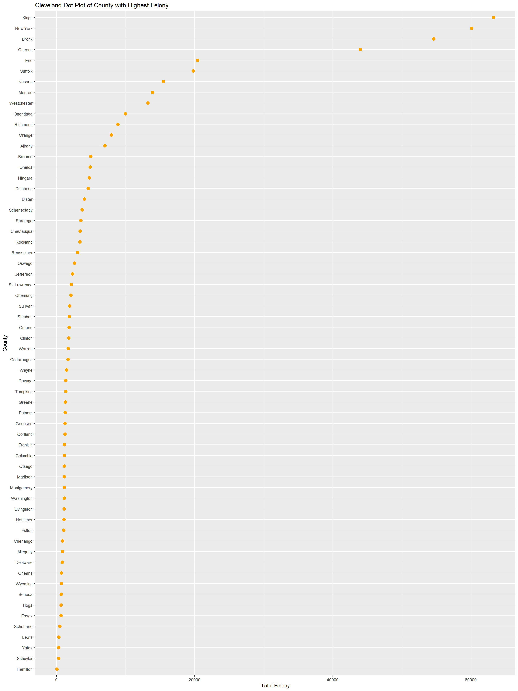

3 Results
Our analytical journey through the intricate landscape of crime in New York is set to address fundamental questions that shape our understanding of safety and security within the state. We begin by probing the evolution of crime rates over the years, seeking to unveil discernible patterns or fluctuations that have marked the trajectory of criminal activities. Additionally, we explore the nuanced variations in crime rates across different counties and regions in New York, aiming to uncover localized trends and understand the diverse factors influencing crime dynamics.
As we navigate through these overarching questions, our focus seamlessly transitions into a detailed examination of felony-related data. Delving into the intricacies of felonious activities within the state, we aim to provide a comprehensive perspective on the nature, distribution, and trends of felonies. This in-depth analysis will not only answer the broader questions about crime rates but also unearth valuable insights into the specific dynamics of felony occurrences, contributing to a holistic understanding of the criminal landscape in New York.
3.0.1 A Comprehensive Analysis of Crimes Over the Years Across Counties
We embark on our analytical journey by examining the evolving landscape of crime rates over the years. Our primary focus centers around the state of New York, where we delve into the occurrence of major heinous crimes. Through visual storytelling, we aim to uncover trends, patterns, and insights that may lie within the data sets, shedding light on the dynamic nature of criminal activities in this region.
As we delved into our analysis, a noticeable surge in major crimes emerged, casting a spotlight on incidents unfolding across the vibrant landscape of New York City. This trend is vividly captured in the graph below :
3.0.2 New York State Insights
A notable observation emerges as we scrutinize the data—over the span of a decade, crimes in each borough have witnessed a remarkable reduction, nearly halving. This trend persists, indicating a consistent decline in the subsequent decade as well. The numbers tell a story of positive change and enhanced safety across the diverse neighborhoods of New York City.
Observing the depicted graph, we discern a nuanced narrative within the vibrant tapestry of New York City. This intricate story unfolds across the four prominent boroughs — New York, Queens, Bronx, and Kings. Each borough contributes its unique thread to the fabric of major crimes, revealing a compelling tale of urban dynamics and safety patterns.
Based on the data, a significant portion, accounting for 40%, of the reported incidents is occurring within the bustling streets of New York City. This statistic highlights the concentration of activities and underscores the need for a focused examination of the city’s safety dynamics.
3.0.3 New York City Insights
Now, let’s delve deeper into the specifics of the types of crimes that have been unfolding over the years. By examining the trends, we aim to unravel the patterns and gain insights into the nature of incidents.In the graph below, we illuminate the major categories of crimes, particularly those classified as property and violent offenses. The visual representation spans across time, offering insights into the unfolding trends of these crime types.
3.0.4 Deep Dive into Violent Crimes over years

Our analysis spotlights areas of concern within New York City, indicating that Bronx and Kings exhibit a higher prevalence of violent crimes. Following closely are New York and Queens, raising awareness about the safety dynamics in these regions.
Socioeconomic Factors says: The Bronx has faced significant socioeconomic challenges, including high poverty rates, unemployment, and inadequate access to quality education and healthcare. These factors can contribute to higher crime rates.
3.0.5 Deep Dive into Property Crimes over years

Our analysis identifies that Larceny stands out as the primary contributor to property crime rates. In our analysis, we observe that among property crimes, Burglary and Motor Vehicle Theft are notable contributors. These two categories warrant closer scrutiny to comprehend the factors influencing their occurrence and to develop targeted strategies aimed at reducing these specific types of property-related incidents.
Let’s embark on an illuminating exploration of crime distribution across New York City’s diverse counties. Through an interactive parallel coordinates plot, we’ll unveil the intricate patterns of each crime type, offering a comprehensive overview. This dynamic visualization allows us to filter and focus on specific counties and crime categories, providing an engaging and insightful journey into the multifaceted landscape of safety dynamics across the region.
3.0.6 In-Depth Analyses of County and Regional Crime Dynamics
The interactive nature of our parallel coordinates plot allows us to hone in specifically on New York City. By selecting and filtering this region, we can delve into a more detailed exploration of crime patterns within the city, offering a focused and nuanced perspective on safety dynamics. This tailored approach ensures a more targeted analysis that aligns with our specific areas of interest.
The distinct portrayal of New York City compared to non-New York regions reveals a compelling narrative. The maximum concentration of crimes is notably centered in New York, unveiling a clear pattern. Our analysis indicates a positive correlation among Robbery, Aggravated Assault, and Burglary, suggesting a potential interconnection between these crime types. Interestingly, Motor Vehicle Theft exhibits a negative correlation, implying a different trend in its occurrence compared to the other crime categories. These insights contribute to a nuanced understanding of the crime dynamics within and outside New York City.
Below chart the gives the insights on the New York City : boroughs.
3.0.7 In-Depth Analyses of five major County
3.0.8 Behind Bars: NYC vs. Non-NYC - Unveiling the Tale of Two Jail Populations

Dive into the stats behind New York’s jail scene, where we’ve broken down the numbers by county, focusing on “InHouse” counts from 2016 to 2022. Non-NYC facilities seem to take the lead, but before you decide, consider the size of the playground – Non-NYC has more elbow room. Yet, even after leveling the field, NYC appears to be rocking a higher jail arrest vibe. Keep an eye on the “Other Unsentenced” crew; they’re stealing the spotlight, while “Civil” keeps it chill at the bottom.
The surge in NYC jail numbers isn’t just a statistical blip; it’s a key player shaping the crime landscape over the years. Enter the “Total New York States Insights” chart – the ultimate storyteller. Watch closely as the increased presence in NYC jails casts its shadows on the overall crime rates. It’s a tale of cause and effect, where the rise in NYC jail figures resonates with the broader narrative of crime rates, painting a vivid picture of the city’s evolving dynamics.
3.0.9 Diving into Data: County Chronicles of Crime 2010-2022 by Hate Crimes

Hold onto your hats, folks! We’re taking a rollercoaster ride through the county lanes, exploring the intricate dance of data from 2010 to 2022. Our spotlight? Hate crimes, with their two sidekicks: Property Crimes and Crimes Against Persons.
Now, buckle up, because here’s the scoop – no grand revelations, but a subtle symphony of trends. Picture this: ‘Property Crimes’ takes center stage, stealing the spotlight from its counterpart ‘Crimes Against Persons.’ It’s like the classic battle of the genres, but fear not, there’s no winner declared here.
As we flip through the data pages, a pattern emerges – a tiny nudge in the numbers over the years. It’s like watching a plot twist unfold in slow motion. So, while we can’t shout major conclusions from the rooftops, we can definitely whisper – ‘Property Crimes,’ you sly dog, you’ve been stealing the show!
3.0.10 Unveiling the NYC Hate Crime Odyssey: A 20-Year Journey
Hold onto your seats as we navigate the turbulent waters of hate crimes over the past two decades! The graph speaks volumes, revealing the undisputed leader in the realm of hate crimes – none other than the Big Apple, NYC!
As we dissect the data, all five boroughs of NYC – Kings, New York, Bronx, Queens – stand under the spotlight. The tale unfolds, starting with Kings taking the lead, passing the baton to New York, marking a shifting landscape of hate crimes.
Now, the burning question: Are we safe here in NYC? It’s the elephant in the room, and the graph doesn’t shy away from asking. Join us in peeling back the layers of this data-driven narrative, exploring the trends that have shaped our city’s safety landscape over the years. Buckle up, it’s a ride through time, crime, and the heartbeat of NYC!
3.0.11 Decoding Hate: NYC’s Trending Categories Over the Years
Get ready to dive into the intricate web of hate crime categories as we unveil the patterns that have defined NYC’s landscape. We’ve crunched the numbers, analyzed the trends, and the results are in!
Hold onto your seats as we reveal the frontrunners in this disheartening race. Taking the lead is ‘Color,’ echoing a disconcerting tale of discrimination, closely followed by ‘Gender,’ with its own set of unsettling narratives.
Delving deeper into the specifics, the heavyweight champions emerge: ‘Anti-Black’ stands tall as the highest-rated hate crime, leaving a somber imprint on the city’s conscience. Right on its heels is ‘Anti-Gay-Male,’ reflecting another layer of societal challenges we face.
Now, let’s not forget, these insights are derived from a focused lens on specific categories – race, color, sexual orientation, gender orientation, disability, age, and religion. It’s a snapshot of a more comprehensive issue, but it’s a starting point for understanding the complexities of hate crimes in our vibrant city. Join us as we unravel the data tapestry, seeking insights into the categories that demand our attention and reflection.

Delving into the intricate tapestry of hate crimes in NYC, a comprehensive timeline now reveals the prevailing patterns across categories. At the forefront are ‘Color,’ ‘Gender,’ and ‘Religion,’ emerging as the top three players in this disconcerting narrative. This timeline isn’t just a graph; it’s a snapshot of the evolving dynamics that demand our attention. Unraveling the threads year by year, it offers a poignant glimpse into the challenges embedded within the city’s societal fabric. This isn’t merely data on a chart; it’s a call to action, urging us to confront and address the persistent issues that shape NYC’s narrative of hate crimes.
3.0.12 Unveiling the Pulse of New York State: Animated Crime Chronicles
Hold onto your seats as we embark on a dynamic journey through the heart of New York State’s crime landscape. With a slider-animated choropleth, we’ve brought the 62 counties to life, showcasing the ebb and flow of crime over the years.
As the animation unfolds, the spotlight shines brightly on the city that never sleeps – NYC. It’s a visual feast, revealing the highest total crimes, including both the gritty drama of violent crimes and the subtle nuances of property crimes.
But wait, there’s more to this narrative! Joining the hustle and bustle alongside NYC are the contenders – “Monroe,” “Buffalo,” and “Onondaga” – each with its own crime population adding to the animated drama.
This isn’t just a map; it’s a living, breathing story of New York State’s crime evolution. So, buckle up as we ride the waves of data, peeling back the layers to understand the pulse of each county in this captivating visual journey.
3.0.13 Diving into the Heart of NYC: Animated Violent Crime Trends
Hold your breath as we zoom into the beating heart of New York City, dissecting the trends in violent crime across its five boroughs. With a captivating animation, we’ve spotlighted the dynamic dance of data over the years.
NULL
The star of the show? Kings County takes the lead, showcasing the highest counts in Aggravated Assault, while the Bronx and New York follow closely behind. The animation peels back the layers, revealing the subcategories of Murder, Rape, Robbery, and the heavyweight champion, Aggravated Assault.
Watch closely as the visual narrative unfolds – Aggravated Assault dominates the scene, with Robbery not far behind, while Murder and Rape take a comparatively subdued stance. It’s more than just numbers on a screen; it’s a nuanced exploration of NYC’s violent crime landscape over time. Join us in this visual journey, decoding the trends that shape the safety dynamics of our beloved city. 📉🏙️🚨
Transitioning to our next dataset, we immerse ourselves in a comprehensive exploration of crime data meticulously categorized into felonies and misdemeanors. This rich dataset unfolds a detailed account of criminal activities, encompassing a diverse array of crime types, including drug-related offenses and Driving While Intoxicated (DWI). Spanning multiple years, this dataset offers a panoramic view of crime metrics across various categories within different counties.
Each row within the dataset encapsulates a specific county and year combination, providing a granular insight into the dynamics of criminal activities over time. The columns, laden with crime-related metrics, serve as the key to unraveling patterns, trends, and variations in criminal behavior. Join us on this analytical journey as we navigate through the layers of data, peeling back the intricacies of felonies, misdemeanors, and specific crime types, to build a nuanced understanding of the criminal landscape across counties and years.
3.0.14 Diving into the Heart of NYC: Animated Property Crime Trends
You Joining us on a visual exploration of the urban jungle as we unravel the trends in property crimes across the five iconic boroughs of New York City. With an engaging animation, we’ve highlighted the pulse of the city’s safety dynamics over the years.
NULL
Enter the stage, and behold the starring act – Larceny takes the spotlight, soaring above Burglary and Motor Vehicle Theft. The drama unfolds, revealing that in the realm of property crimes, Kings and New York Counties lead the charge, with Larceny consistently on the rise.
As the animation guides us through the highs and lows, it becomes evident that the story is more than just statistics; it’s a reflection of urban life. Tune in to witness the nuances of crime trends, decoding the rhythm of the city’s safety landscape.
The upcoming graph serves as a visual representation of the county-wise distribution of average felony rates. In this Cleveland plot, we unveil the nuanced variations in felony rates across different counties. The plot offers a distinctive perspective, allowing us to discern patterns and outliers in the average felony rates within each county.
3.0.15 Total Felony Over Year Across Counties

This Cleveland plot illustrates the average Felony and Misdemeanor rates for various counties, prominently highlighting New York as having the highest combined offenses
3.0.16 Average Felony and Misdemeanor across Counties
# A tibble: 62 × 3
County Average_Felony Average_Misdemeanor
<chr> <dbl> <dbl>
1 Albany 2464. 4542.
2 Allegany 255 606.
3 Bronx 16057. 38567.
4 Broome 1478. 3478
5 Cattaraugus 490. 1186.
6 Cayuga 424. 922.
7 Chautauqua 977. 2446.
8 Chemung 529. 1557.
9 Chenango 252. 629.
10 Clinton 528. 1251.
# ℹ 52 more rows